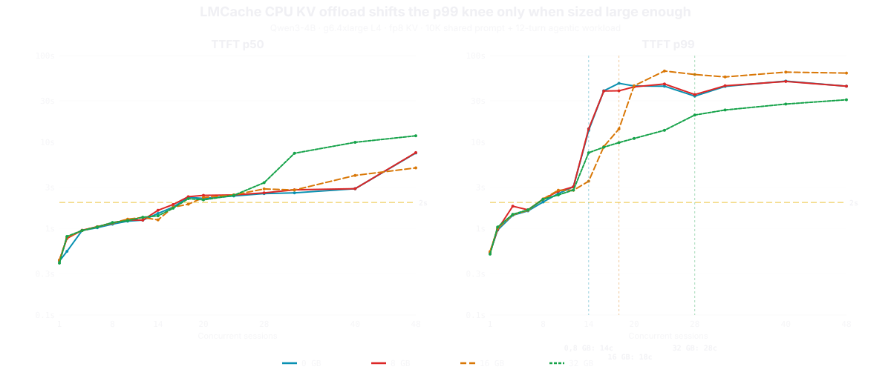
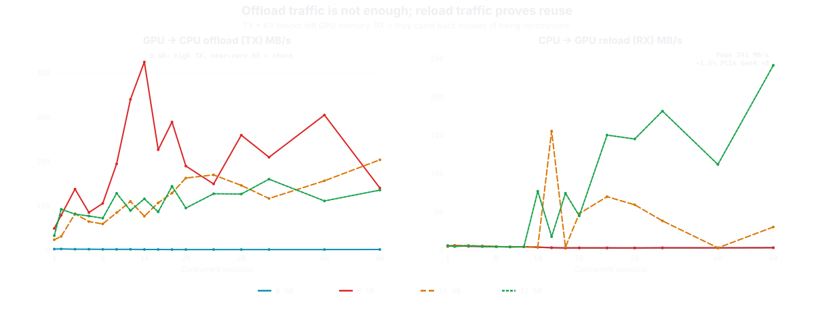

KV Cache, Disaggregation, and Inference Utilization
A systems engineer's journey into LLM inference. Routing, scheduling, placement, memory movement, tail latency.
Open by framing the talk: this is a story about discovery. I came from distributed systems, was intimidated by the ML side of inference, and realized the hard problems at scale are the ones I already knew how to think about. The audience should leave with a concrete mental model for why inference at scale is really a distributed systems problem, and KV cache is the object at the center of it.
2 / 33Perspective of a distributed systems engineer
Inference seems intimidating at first
Attention heads. KV projections. CUDA kernels. Tensor parallelism. Quantization formats.
Routing and scheduling
Backpressure and admission control
Tail latency and capacity planning
Cache eviction and memory movement
These are distributed systems problems.
The ML vocabulary is dense, but the problems that break production at scale are routing, scheduling, eviction, tail latency — distributed systems 101. Let the two-column comparison land, then deliver the punchline: these are problems we already know how to think about.
3 / 33Agenda
Utilization
The key metric that drives availability, performance, and economics.
Running example: Qwen3-4B (FP8) on 1x NVIDIA L4 (24 GB). 10K system prompt, 12-turn conversation, ~22K tokens peak context.
Frame utilization as the central theme. GPU utilization isn't just about keeping the hardware busy — it directly determines how many users you can serve (availability), how fast each request completes (performance), and how much you pay per token (economics). Everything in this talk — KV cache management, disaggregation, prefix caching, tiered storage — is ultimately about improving utilization.
4 / 33
Two stages of inference
Qwen3-4B FP8 on 1x NVIDIA L4 (24 GB)
Prefill is the "thinking" pause. The GPU processes the entire input. This determines TTFT.
Decode is the streaming response. Each token reads the entire KV cache. Memory-bandwidth-bound.
Make this concrete. "When you send a prompt to an LLM, two very different things happen. First: prefill. The GPU processes your entire 22,000-token input in parallel. This is compute-heavy, and it's what you experience as the pause before the response starts. That pause is TTFT. Second: decode. The model generates output tokens one at a time. Each new token needs to read the entire KV cache. This is memory-bandwidth-bound." The key insight: these two phases have fundamentally different bottlenecks. Prefill is limited by compute. Decode is limited by memory bandwidth. Same GPU, different constraints.
5 / 33Steps in inference
Journey of a prompt
Build the diagram step by step. Phase 1: prompt arrives. Phase 2: tokenized into 22,800 tokens. Phase 3: engine checks cache — MISS means process everything from scratch. Phase 4: prefill runs, KV cache fills, first token appears (TTFT). Phase 5: decode loop generates tokens one at a time reading the full KV cache, response completes — engine tries to retain cache but eviction pressure can force re-prefill. Phase 6: reveal the HIT path — skip prefill entirely, go straight to cached KV state. This is the punchline: the best prefill optimization is avoiding prefill.
6 / 33Journey of a prompt
Request Lifecycle
Walk through the Dynamo lifecycle. Phase 1: request arrives at the Router, which tokenizes the input and queries the KVIndexer (a radix tree tracking cached blocks per worker) to find the prefill node with the most KV cache overlap. Phase 2: the prefill node computes KV vectors and returns transfer metadata. The router selects a decode node and forwards the request. NIXL performs direct GPU-to-GPU KV transfer via RDMA or NVLink, zero-copy. Phase 3: the decode node generates tokens one at a time, streaming back through the router. The router is the brain, the KV cache is the shared state, and NIXL is the data plane.
7 / 33
What is KV cache?
Every token produces a Key and a Value vector at every layer. These are the token's contribution to attention. The KV cache saves these vectors so they do not need to be recomputed. When the next token arrives, it only computes its own Q, K, V and attends against the cached K and V of all previous tokens. This is the mechanism behind "avoiding prefill" from the previous slide.
8 / 33Qwen3-4B (FP8)
Sizing KV for a single session
// Per-token KV at fp8
layers
×
kv_heads
×
head_dim
×
2(K,V)
×
bytes
36
×
8
×
128
×
2
×
1
72 KB
22K token context : 1.6 GB per session
GPU
VRAM
T4
16 GB
L4
24 GB
L40S
48 GB
A100
80 GB
H100
80 GB
H200
141 GB
B200
192 GB
72 KB per token sounds small, but 22,800 tokens at 72 KB each is 1.6 GB. On a 24 GB L4, that is nearly 7% of total VRAM for a single session. The GPU table drives the point: more VRAM = more concurrent sessions, period. An H100 and A100 both have 80 GB, so they serve the same ~27 sessions despite the H100 having 64% more bandwidth. Bandwidth determines decode speed; VRAM determines concurrency. The H200's 141 GB nearly doubles the H100's session count. B200 at 192 GB pushes to 66. The bottleneck is memory capacity, not compute.
9 / 33
What makes KV caching hard
GBs per session
VRAM overhead
Prefix caching
Three reasons KV caching is hard. First: scale. 1.6 GB per session on a 24 GB L4 means ~7 sessions max if you gave ALL VRAM to KV. But you can't — model weights alone are ~4 GB for Qwen3-4B FP8, then CUDA context takes ~500 MB, activations scale with batch size, and vLLM reserves 10% as buffer by default (gpu_memory_utilization=0.9). Realistically you get 50-55% of VRAM for KV. Second: sharing. Unlike CPU caches where any process benefits from cached memory pages, KV cache entries are prompt-specific. Two users asking different questions produce completely different KV tensors. Only when prompts share a prefix (like a system prompt) can you reuse KV blocks.
10 / 33
Why only prefix matching works
Attention is causal. Each token attends only to tokens before it.
KV[i] = f(token_0, token_1, …, token_i)
“Time flies like an arrow”
flies = verb, like = preposition
“Fruit flies like a banana”
flies = noun, like = verb
Layer L's KV at position i is projected from layer L-1's output, which attended over positions 0..i. Through the full layer stack, KV[i] becomes a function of every token from 0 to i. Change one early token: different attention weights, different hidden states, every KV after it is invalid. The "Time flies / Fruit flies" example makes this tangible: "flies" is the same token at the same position, but the model's internal representation is completely different (verb vs noun) because attention propagated different context from position 0 through every layer. This cascading dependency is why only prefix matching works — you can reuse KV up to the first point of divergence, but nothing after it.
11 / 33Prompt Anatomy
Prefix caching
Cross-session: the system prompt is identical for every user.
Within-session: prior turns may still be in cache.
Shared prefixes allows reuse.
Two dimensions of caching. Cross-session: the system prompt is identical for every user. Within-session: each turn builds on the previous conversation. The critical limitation is prefix-only matching. This is why workload design matters: put the stable content first (system prompt), variable content last.
12 / 33Prefix caching internals
vLLM caches blocks. SGLang caches prefixes.
vLLM: Hash Chain
Fixed 16-token blocks
Block-aligned matching only
LRU eviction, O(1) ops
Contiguous memory layout
SGLang: Radix Tree
Token-level matching granularity
Variable-length edges
LRU leaf eviction, preserves shared prefixes
Pointer-heavy, dynamic allocation
Deep dive blog post
vLLM uses SHA-256 hash chains over fixed 16-token blocks with a flat hash table for O(1) lookup. Each block's hash incorporates all preceding block hashes. SGLang uses a compressed radix trie indexed by token sequences, with variable-length edges allowing prefix matching at arbitrary token boundaries. The radix tree naturally represents shared prefixes across sessions — evicting a leaf preserves parent nodes shared by other sessions. vLLM's hash approach is simpler and has lower CPU overhead, but can only match at block boundaries. Full blog post: https://ksmotiv8.github.io/kvbenchdocs/kvcache/prefix-caching-internals/
13 / 33Prefix caching internals
vLLM vs SGLang: prefix approach tradeoffs
Dimension
vLLM (hash chain)
SGLang (radix tree)
Granularity
16-token blocks
Single token
Lookup
O(1) hash table
O(prefix length) traversal
Memory layout
Fixed, contiguous
Dynamic, pointer-heavy
Multi-turn
Hash chain captures history
Radix tree extends naturally
CPU overhead
Lower
Higher (traversal + alloc)
Boundary waste
Up to 15 tokens/request
Zero
vLLM wins when prefixes align to block boundaries: templated workloads, consistent prompt structures, simpler capacity planning.
SGLang wins on multi-turn conversations with variable-length context and cache-aware request routing across nodes.
Both remain prefix-bound: any token divergence invalidates everything after it. At production scale, model support and deployment tooling usually dominate over caching strategy.
Key nuance: vLLM's 16-token block alignment means cache reuse only happens at block boundaries. For a 4K prefix this wastes less than 0.4%, but for short variable-length prefixes the waste compounds. SGLang's radix tree handles variable-length prefixes naturally and preserves shared parent nodes when evicting leaves — important for multi-tenant scenarios where many sessions share a system prompt but diverge on user content. RunPod benchmarks showed SGLang maintaining ~10% higher throughput under cache pressure on DeepSeek-R1-Distill-Llama-70B on 2xH100, though configuration differences make third-party benchmarks hard to generalize. SGLang also has HiRadix, a 3-tier variant (GPU/host/distributed) for hierarchical storage.
14 / 33EXTENDING KV LIFETIME
Tiered & Remote Caching
Tier
Capacity
Trade-off
VRAM
10s of GB
Scarce and expensive
DRAM
TBs
PCIe latency on reload
NVMe
10s of TB
Latency and write endurance
Recompute
∞
Simplest, consumes most GPU
Each tier trades latency for capacity.
Remote caching is L3 in the memory hierarchy. A 12,800-token session's KV cache at fp8 is ~900 MB, well within what a networked cache handles at sub-millisecond latency. This decouples KV lifetime from GPU lifetime. Same pattern as session state in web applications, moving from in-process memory to memcached.
15 / 33EXTENDING KV LIFETIME
CPU KV offload helps only when sized to the working set
32 GB LMCache roughly doubles the 2s p99 SLA ceiling: ~6 concurrent sessions → ~14. 8 GB provides no measurable benefit because it is smaller than the eviction churn.
LMCache adds a CPU DRAM tier for evicted KV blocks. If the tier is too small, it becomes churn, not cache. If sized correctly, it turns full re-prefill into bounded reload latency and shifts the p99 knee right. The key message: offload capacity must exceed the eviction working set to provide any benefit.
16 / 33EXTENDING KV LIFETIME
8 GB CPU cache is too small to help
Blocks leave the GPU, but they are evicted from CPU RAM before they are reused.
8 GB LMCache shows 340-425 MB/s TX offload GPU→CPU at 12-14c, but only 2.7-6.2 MB/s RX reload CPU→GPU. Blocks leave the GPU but are evicted from the 8 GB CPU tier before any session needs them again. The cache is busy but not useful. To get reuse, you need to size the offload tier to hold the eviction working set — 8 GB is not enough for this workload.
17 / 33EXTENDING KV LIFETIME
Offload changes the failure mode
Without enough spill capacity: bimodal (lucky = warm KV, unlucky = full re-prefill). With 32 GB: degradation is more uniform. p99 improves, but median rises at high concurrency from reload overhead.
Config
14c p50/p99
32c p50/p99
48c p50/p99
Best (fully cached)
138ms / 321ms
495ms / 881ms
417ms / 1.0s
fp8, no LMCache
1.3s / 38.9s
2.6s / 49.7s
5.7s / 43.2s
fp8 + 32 GB LMCache
1.4s / 7.5s
7.4s / 23.5s
11.8s / 30.9s
fp16, no LMCache
3.7s / 36.2s
18.1s / 50.7s
18.8s / 65.8s
Worst (always re-prefill)
6.2s / 38.1s
57.4s / 89.1s
102s / 134s
At 14c: p99 drops from 38.9s to 7.5s with 32 GB LMCache. The tradeoff: p50 rises slightly (1.3s → 1.4s) from reload overhead.
The failure mode shifts from bimodal (some sessions get 1s, others get 39s) to more uniform degradation. At 14c, p99 drops 5x with 32 GB LMCache. At higher concurrencies (32c, 48c), the p99 improvement is still significant but median rises because more sessions pay reload overhead. The system degrades gracefully instead of cliff-diving.
18 / 33EXTENDING KV LIFETIME
TTFT across offload tiers
Qwen3-4B FP8, vLLM 0.20.2, LMCache 0.4.5 — p50 and p99 TTFT vs concurrent sessions

The full TTFT picture across all four LMCache tiers. Left panel is p50, right is p99. The 2s target line shows where SLA compliance breaks. Key takeaway: 8 GB provides no benefit over baseline; 16 GB shifts the knee modestly; 32 GB roughly doubles the SLA ceiling.
19 / 33EXTENDING KV LIFETIME
PCIe traffic: offload vs reload
TX (GPU→CPU offload) and RX (CPU→GPU reload) across LMCache tiers

Left panel: TX offload traffic. All tiers show similar offload rates at the same concurrency — blocks are pushed to CPU regardless of tier size. Right panel: RX reload traffic. 8 GB shows near-zero RX (churn). 16 GB and 32 GB show increasing RX, proving blocks survive long enough to be reloaded. The gap between TX and RX is wasted work.
Result (Baseten): 20x faster TTFT and 4x faster end-to-end latency vs. round-robin routing. Dynamo's router tokenizes each request, partitions tokens into fixed-size blocks, hashes them, and compares against a global prefix tree (the KVIndexer). The cost function balances cache overlap against current decode load. The key tunable is --router-kv-overlap-score-weight: high values favor cache hits (lower TTFT), setting it to 0 falls back to pure load balancing. Similar approaches: SGLang RadixAttention with prefix-aware routing, vLLM's Rust-based router with consistent hashing, Red Hat llm-d with KV-cache-aware routing. Diagram adapted from Baseten blog: https://www.baseten.co/blog/how-baseten-achieved-2x-faster-inference-with-nvidia-dynamo/
21 / 33Optimizing Hit Rates
Load Imbalance Creates Hot Spots
Cache affinity creates hot nodes (many pinned sessions) and cold nodes. Pure round-robin destroys cache locality. Every system must balance both.
Max cache hits
Hot nodes saturate. Tail latency spikes.
Even load
Round-robin. Most requests pay full prefill.
The pattern: a weighted cost function combining cache overlap + current load. No system uses pure sticky sessions or pure round-robin.
Mooncake: proactive KV migration to rebalance hot spots.
The fundamental tension in KV-cache-aware routing. Mooncake's Conductor scheduler computes per-instance cost balancing cache locality (prefix match length via block hashing) and instance load (queue depth + estimated computation time). When a request must go to a suboptimal node for load reasons, that node proactively fetches KV from a shared distributed store ("hot-spot migration"). SGLang with Mooncake Store integration achieved 3.8x higher throughput and 46x lower TTFT on agentic workloads vs. no cache sharing. The common pattern: a weighted cost function with a tunable knob between cache affinity and load balance.
22 / 33The experiment
Benchmark setup
Setup
GPU
1x NVIDIA L4, 24 GB
Model
Qwen3-4B FP8
Engine
vLLM 0.20.2, APC enabled
Sessions
Sweep: 1 to 48 concurrent
Mini Agentic coding workload
System prompt
10,000 tokens (shared)
Conversation
12 turns, ~1,067 tokens each
Output
75 tokens/turn
Peak context
~22,800 tokens at turn 12
The question: when does total KV footprint exceed the GPU's KV budget?
Transition to the live data section. We sweep concurrency from 1 to 48 to find where the system breaks. The L4 is a $0.70/hr GPU, representative of cost-optimized deployments. These specific numbers are L4-specific, but the shape of the cliff generalizes across GPUs.
Median user sees a one-second pause. Acceptable for agentic workloads.
~2.6s
p99 TTFT at C=12
Tail latency slightly above a 2s SLA. Manageable with tuning.
The KV cache still fits. 12 sessions x 12.8K unique tokens = ~154K tokens. Capacity is ~178K. There is headroom. Now add two more sessions.
This is the "calm before the storm" slide. Let the audience absorb that the system works. 12 concurrent agentic sessions on a single $0.70/hr L4. Then say: "Now add two more sessions." Pause. Next slide.
Cache hit. Only the latest turn prefilled. Looks fine.
38.9s
p99 TTFT at C=14
Session evicted. Full re-prefill of 12,800 tokens.
Bimodal distribution. Lucky requests hit warm cache: 1-2s. Unlucky requests pay full re-prefill: 30-50s. The median hides a broken system.
The audience just saw everything looking fine at C=12. Now show C=14. The p50 barely moved, but the p99 exploded. Nobody experiences the average. Half experience 1.3 seconds, the other half experience 39 seconds.
p99 TTFT jumps from 2.6 seconds to 38.9 seconds between C=12 and C=14. Not a single re-prefill. Cascading evictions under contention, with queuing delays compounding.
The full picture. Everything is flat until the KV cache fills, then p99 explodes while p50 barely moves. The GPU is not saturated; the memory is full.
How to get available KV memory: vLLM logs # GPU blocks at startup. Multiply by block size (16 tokens) × per-token KV bytes. Or: ~50-55% of raw VRAM ends up available for KV.
Three steps, one slide. Step 1: per-token KV from config.json (GQA gives 8 heads instead of 32). Step 2: subtract weights + overhead from VRAM. Step 3: simple division. Gets within 20% of observed knee. The vLLM startup log is the practical way to get the exact number.
27 / 33The systems lesson
One flag, 75% more headroom
Qwen3-4B on 1x NVIDIA L4 (24 GB), vLLM 0.20.2
Changing one config flag (kv_cache_dtype) shifts the KV budget knee from 8 sessions to 14 to 23. Same GPU. Same model. Same workload.
⚠️ For illustrative purposes only. 4-bit may measurably impact output quality. Eval before using.
One config change, three different concurrency ceilings. fp16 to fp8 doubles capacity and moves the knee from ~8 to ~14. fp8 to 4-bit extends it to ~23. This is a systems lever, not an ML lever.
Full session cached. Only ~200 unique tokens need prefill.
Realistic
388 ms
System prompt cached. ~12,800 unique tokens prefilled per session.
Worst case
2,500 ms
System prompt cached, but all user context re-prefilled at peak depth.
57ms with perfect caching. Prefill cost nearly vanishes. The realistic 388ms per turn is not a compute limitation. It is the cost of per-session context uniqueness: the tokens that can never be shared.
Miss depth matters. Realistic misses happen at any turn depth (turn 3 = ~3K tokens). Worst forces every miss at peak depth (turn 12 = ~12.8K tokens). Real traffic is much kinder than worst case.
The gap between best and realistic represents the fundamental cost of per-session uniqueness. The gap between realistic and worst shows how much eviction patterns matter.
Mixed workloads on shared GPUs: one long-context session can evict the KV cache for a dozen short-context sessions. You need workload-aware admission control, not a single global concurrency limit.
168 sessions vs 3 on the same GPU. The only variable is per-session unique context. A mixed deployment needs workload-class-aware admission control. One long-context session can thrash the cache for many short-context sessions.
30 / 33Motivation
Disaggregated Prefill - Decode
Size, schedule, and tune each pool independently.
Protect decode latency from prefill bursts
Scale prefill and decode capacity independently
KV transfer becomes a first-class scheduling tool
Prefill is compute-heavy and benefits from batching long prompts, while decode is memory-bandwidth and latency sensitive. Splitting them lets you size, schedule, and tune each pool independently. NVIDIA Dynamo frames this as balancing throughput and latency. The tradeoff: KV transfer becomes a real system cost. The win is largest for long-context, bursty, or SLO-constrained workloads.
31 / 33Disaggregation
Decouple prefill from decode
KV cache becomes the interface between prefill and decode
Prefill produces KV; decode consumes it
The system now needs placement, routing, eviction, and transfer across nodes
Similar to separating write and read paths in databases.
Disaggregation and KV caching are deeply linked. The KV cache IS the interface between prefill and decode. In a disaggregated architecture, it becomes a distributed object: prefill nodes produce it, decode nodes consume it, and the system must decide where to store it, when to evict it, how to transfer it, and which node should handle the next request. Industry direction: NVIDIA Dynamo, AWS Trainium prefill offload, Cerebras wafer-scale decode.
32 / 33
Disaggregation: Benchmarks
Prefill is compute-bound (90-95% GPU utilization). Decode is memory-bound (20-40%). Running both on the same GPU wastes whichever resource isn't the bottleneck.
Prefill and decode have fundamentally different hardware profiles. Decoupling allows you to scale them independently.
Input:Output Ratio is the key metric for independent scaling.
Every major inference system has converged on disaggregation: Dynamo, llm-d, SGLang, vLLM, Mooncake, DistServe. The Splitwise numbers are the cleanest: prefill achieves 90-95% GPU compute utilization at 200-400 ops/byte, while decode gets only 20-40% at 60-80 ops/byte. Running both on the same GPU wastes compute during decode and bandwidth during prefill. The 27ms KV transfer cost of disaggregation replaces 200-500ms of queuing delay from prefill-decode interference. Not all workloads benefit equally, but for long-context and reasoning workloads, the data is unambiguous.
33 / 33Conclusion
Utilization
KV cache, disaggregation, routing, load leveling are all means to improve utilization.
Optimizing utilization drives better availability, performance, and cost.
Full blog series: ksmotiv8.github.io/kvbenchdocs/kvcache/
Close the loop. Everything in this talk — KV caching, disaggregation, routing, load leveling — serves one goal: utilization. Better utilization means better availability, performance, and cost. Thank you.